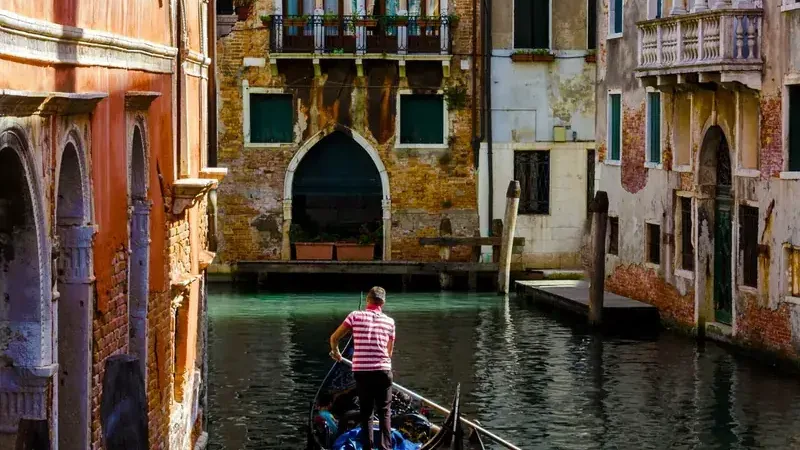

The short answer
Take a Frecciarossa (Trenitalia) or Italo high-speed train from Firenze Santa Maria Novella to Venezia Santa Lucia: about 2 hours 5–15 minutes, direct, with around 20–40 trains a day from early morning to evening. Booked a few weeks ahead, fares often start around €20–25; bought on the day they are usually €50–60 or more. Compare Frecciarossa and Italo times and fares in one search.
Compare the trains
| Train | Time | Price (one way) | Seat | Best for |
|---|---|---|---|---|
| Frecciarossa (Trenitalia) | ~2h05–2h15 | from ~€20–25 early, €50–60+ on the day | Reserved, included | Most travellers |
| Italo | ~2h15 | similar, frequent promos | Reserved, included | Comparing prices |
| Regionale / Regionale Veloce | ~3h45–4h15, 1–2 changes in Bologna/Padua | cheapest, fixed fare | No reservation | Tight budget, no luggage |
Prices are indicative (November 2026) and change with demand: always check before you travel.
Frecciarossa or Italo? Same speed, similar comfort: pick the one with the better time and price on your day. The differences in fares and changes are in Trenitalia vs Italo.
Santa Lucia or Mestre? Get off at the right one
- Venezia Santa Lucia is the station in the historic centre: you walk out of the door onto the Grand Canal, with vaporetto stops right in front. This is the one you want if you sleep in Venice.
- Venezia Mestre is on the mainland, about 10 minutes before Santa Lucia. Many trains stop there first, and some Italo services end there: check your ticket. If you get off by mistake, any regional train takes you to Santa Lucia in about 10 minutes.
- Sleeping in Mestre is cheaper, but you will commute by train or bus every day: fine for a budget, less magical.
- In Florence, high-speed trains leave from Santa Maria Novella (SMN), in the centre. A few use Firenze Rifredi or Campo di Marte: always look at the station name on the ticket.
Tickets and prices
- Buy on the official Trenitalia or Italo websites and apps, or on a comparison site such as Omio that shows both. Avoid unknown sites selling "official tickets" at a markup.
- The cheapest fares (Economy, Super Economy; Italo Low Cost) have limited or no changes and refunds. Pay a little more if your plans may change.
- High-speed tickets have a seat number and are valid only on that train: no validation needed, a QR code on your phone is fine.
- Fridays, Sundays, Carnival (February) and spring holidays sell out first: book those early.
Arriving in Venice: the first 15 minutes
- There are no cars or taxis in the centre: from Santa Lucia you walk or take a vaporetto (water bus). A single ride costs about €9.50 and lasts 75 minutes; multi-day passes save money if you take more than three or four.
- Line 1 goes slowly down the whole Grand Canal to St Mark's (about 45 minutes): a sightseeing trip in itself. Line 2 is faster.
- Travel light: Venice is bridges and steps. A big suitcase on the Rialto steps in August is the classic mistake.
- Have your hotel's exact location saved offline: alleys and similar names make maps tricky.
Mistakes to avoid
- Getting off at Mestre thinking it is Venice, or booking an Italo that ends there.
- Arriving late at SMN: the platform (binario) appears on the board about 10–15 minutes before departure, and high-speed trains do not wait.
- Buying a paper regional ticket and forgetting to validate it: see How to validate a train ticket in Italy.
- Travelling on a strike day without checking: see Train strikes in Italy.
- Renting a car for Venice: there is nowhere to drive. Parking at Piazzale Roma or Tronchetto is expensive.
Tips
- Sit on the right side of the train going north for the brief lagoon view as you cross the Ponte della Libertà into Venice.
- The classic order is Rome → Florence → Venice: see Rome, Florence and Venice in 7 days and Venice in 2 days.
- Book the Doge's Palace and the St Mark's terraces before you go: see tickets with a time slot.
- Want to sleep a few minutes from the station? Compare hotels in Cannaregio and San Polo.
Plan your trip to Venice
Some links are affiliate links: booking through them costs you nothing extra and helps keep 687 free.
Florence to Venice, without surprises.
In 687 Italy the move to Venice is a stage of your trip: the right station (Santa Lucia, not Mestre), official train booking and strike alerts. If a delay changes the plan, NOW rebuilds the rest of the day.
Sources
Checked against these official sites in November 2026. Prices and rules can change: always confirm before you travel.